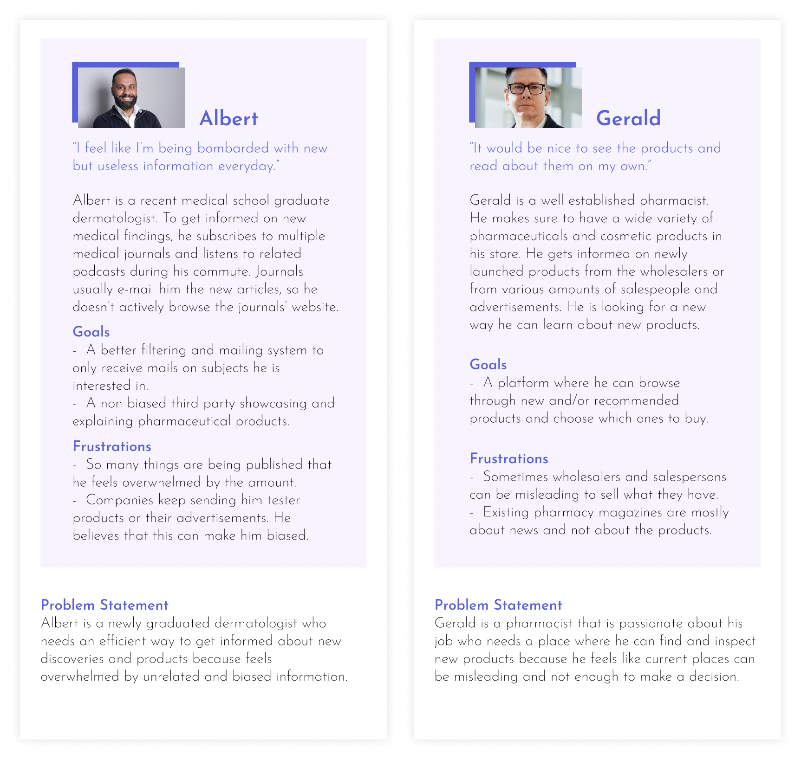
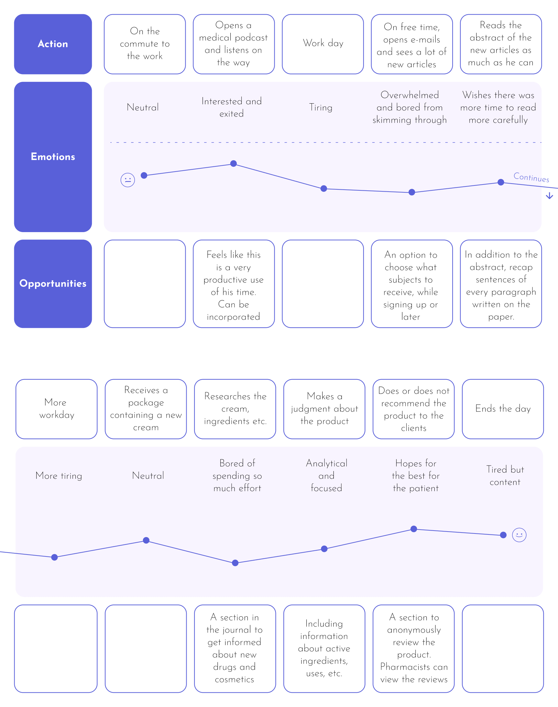
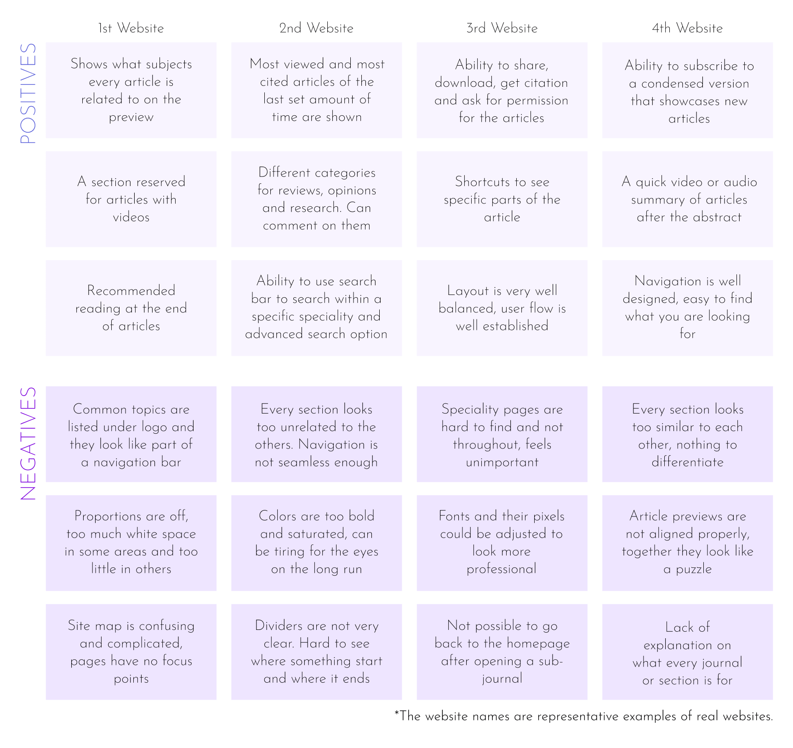
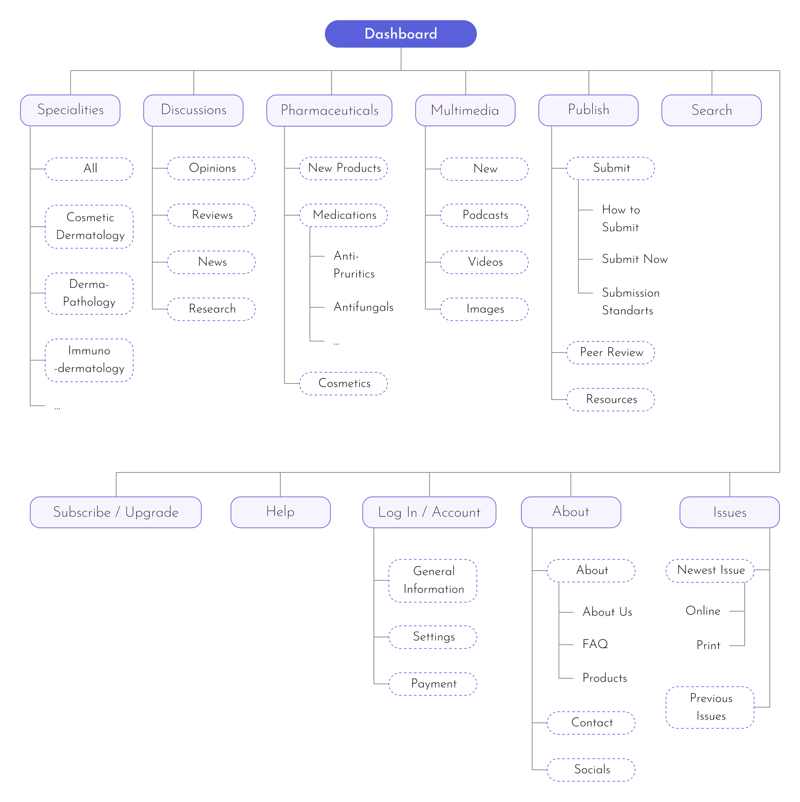
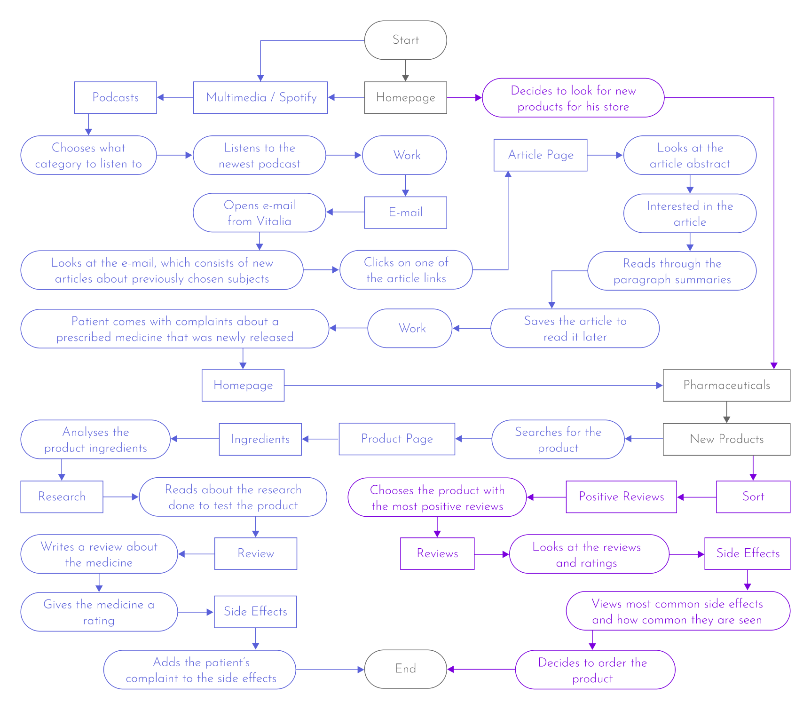
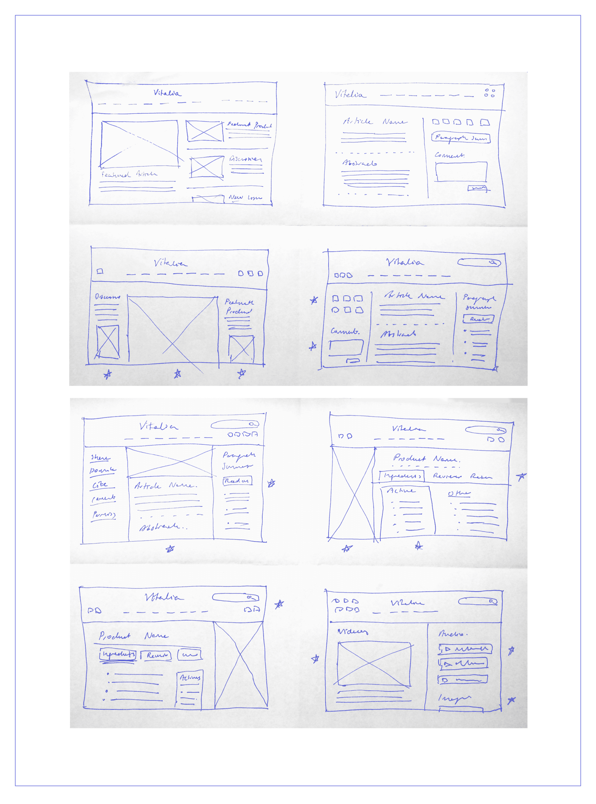
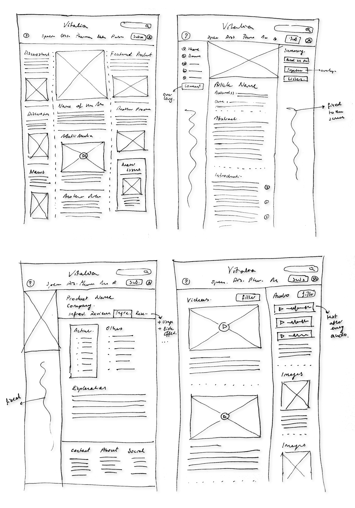
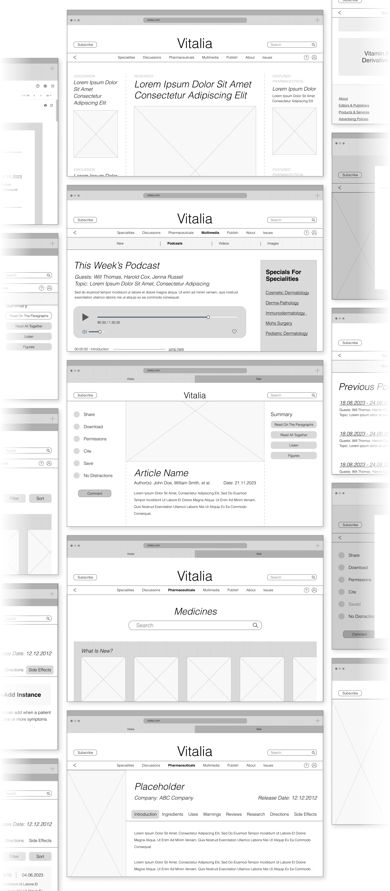
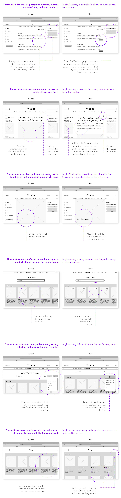
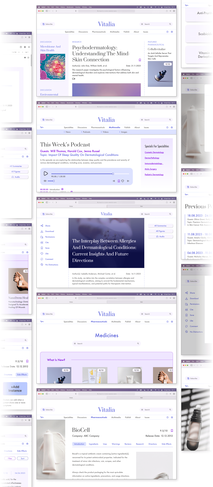

Vitalia is a B2B journal about skincare for dermatologists, pharmacists and skincare enthusiasts. Shares new research findings and pharmaceuticals (including medications and cosmetics).
UX designer designing an app from conception to delivery.
Conducting research, paper and digital wireframing, low and high-fidelity prototyping, conducting usability studies, and iterating on designs.
August-September 2023
There is a lack of a platform focused only on dermatology and limited opportunities for discussions and gathering data. The medical and cosmetic aspects of skin care are too separate from each other in the media.
Vitalia aims to bring dermatologists and pharmacists together and increase information flow about new research about skincare and innovative pharmaceuticals along with cosmetics.
I first browsed some medical forums on the internet about the subject. Later, I interviewed two dermatologists and some medical students and asked them about their experiences with medical journals and some of their work processes. Since I also wanted the journal to be a place for new pharmaceuticals to be introduced, I also included some pharmacists in the interview process and prepared custom questions for them.
Here are some of the questions I've asked during the interviews:
"Do you follow a medical journal? If not, why?"
"If you follow a medical journal, what is your preferred method of discovering articles and do you have any complaints or ideas about areas to improve?"
"How do you get informed about pharmaceuticals new in the market?"
"Would you be interested in browsing a medical journal to learn about new pharmaceuticals?"
The problems and experiences of the dermatologists and medical students merged commonly and were much different from the pharmacists'. Experienced doctors knew how to manage the information overload compared to the inexperienced ones. So, the best approach was to create two personas, one of them being a newly graduated medical professional and the other a pharmacist.
User journey map of Albert. The day is generally very overwhelming and tiresome. There is an information overload from e-mails, companies and mostly from clients. In light of this, I figured that the most important factor for Albert was to collect information as simply and as fast as possible.
I analysed generic medical journals mainly. The aspects I have mostly considered were the article pages, navigation (inc. sections), incorporation of multimedia, and visual interfaces. I also scanned some cosmetic stores' websites for inspiration. Although, I haven't incorporated that research into the audit - which is more focused on scientific journals.
This is the part where the structure of the website was established, how the users would move through the website were going to be, how the website would be navigated by the user or how the initial layout and features of the website were going to be. All of these decisions were based on the data gathered by the research of the previous section. For example, I designed the sitemap and then later the user flows. The user flows were determined by analysing the personas and user journeys and seeing how a dermatologist or pharmacist would navigate the initial sitemap structure. Then, I realised the user flows would not be fulfilling the wishes of the personas, so I updated the sitemap.
The site map is in hierarchical order. The main navigation consists of seven core topics -specialities, discussions, pharmaceuticals, multimedia, publish, about, and issues- with their own subtopics. There are four supporting navigation elements -search, help, account, and subscribe-.
User flows for a dermatologist and a pharmacist. Some actions are reading articles, listening to podcasts, opening e-mails, analysing a product, reporting a side effect, and sorting products by ratings. The user flow for the dermatologist is displayed in navy, while for the pharmacists, it is displayed in violet.
The main pages I wanted to focus on for the crazy eights exercise were the homepage, article pages, product pages and multimedia. At this stage, the navigation items had already been established previously, so one of the goals was to integrate features like a search bar or subscribe button into the navigation bar.
Improving on the ideas and beginning to form the basic prototype. During this phase, it became clear that it was critical to separate the features that were available to licenced dermatologists from what was available to pharmacists and ordinary people interested in skincare. Because some features required the user to have a certain level of expertise to ensure the website was reliable and not prone to misinformation. Some of these features (to which only verified dermatologists are allowed access) include adding reviews and ratings for medicines and adding instances for side effects.
The general layout from the crazy eights that I wanted to follow through was the idea of a distinct middle section and supporting side sections. Therefore dividing the frame into three sections, the middle one being the one focused on. Sometimes one of the side sections would be incorporated into the main section. A lot of the supporting features were fixed on the page (not scrolling with the rest of the page)
Wireframes were essentially polished sketches. Since this was a website, I added the browser tab at the top of the wireframes to see how much space it would take and how it would affect the view above the fold. For the navigation bar, I decided to group the horizontal buttons (such as search bar and subscribe) with the website logo and other buttons (such as account, help, and go back) with the navigation lists. This way ensured a more harmonical view that was easy on the eyes.
 As the prototype improved, it became obvious that the navigation bar took up too much valuable space and disturbed the reading process. So, to have more space for reading, I've made the navigation bar shrink as the user scrolled down and hid the navigation lists. And if the user wanted to use the navigation lists, they would easily do so when they scrolled upwards.
This next video is the prototype of the user flow of a dermatologist. Includes: Listening to a podcast, Viewing e-mails, Reading and interacting with an article, Searching and inspecting a medication, and Adding a side effect instance for said medication.
The prototype showcases the user flow of a pharmacist. Includes: Looking at pharmaceuticals, sorting cosmetics by their ratings, selecting a product, reading its instructions + reviews and side effects.
Unlike conducting interviews, finding and asking extremely busy professionals to take the time to review a prototype was challenging. I have discovered that this is a common problem with B2B products. Thankfully, it was easier to reach the medical students. There were two different prompts for dermatologists and pharmacists to follow since their user flows were different from each other.
As you too might have realised, most problems were of time-sensitive concerns. The themes were focused on clarity, ease of access and acclimatization. So, I have taken liberties to make changes to the design towards that route in addition to the changes done because of user testing results.
The goal while making the high-fidelity designs was to ensure that the website was dynamic, clean-looking, fresh, professional and intriguing. Colours, fonts, icons, white space, and movements were the biggest contributors to making that happen. To make the prototype as realistic as possible without using other people's content, the articles and product descriptions were written by the AI.
*Warning: The products, images and articles in these prototypes are all imaginary and do not have any validity.
Most people associate the words health, cleanliness, and calmness (words that I wanted to associate the website with) with the colours blue and purple. So, I have made the main colouring the tints of navy blue and the accent colours the tints of violet. A professional and sharp font, Futura, was used for most texts, whereas for the headings of articles and products, a classical and distinct font, Prata, was chosen so that they would be distinct from the rest of the text and catch more attention.
 As pointed out in the low-fidelity prototype, I've continued to make sure the navigation bar shrunk as the user scrolled down and then expanded when scrolled up in the high-fidelity prototype. Along with this, as mentioned in the sketches, I made some of the supporting features fixed so that there is harmony between stability and movement and the focus can be more on the centre contents. Horizontal and vertical scrolls and dynamic components were incorporated.
This next video is the prototype of the user flow of a dermatologist. Includes: Listening to a podcast, Viewing e-mails, Reading and interacting with an article, Searching and inspecting a medication, and Adding a side effect instance for said medication.
The prototype showcases the user flow of a pharmacist. Includes: Looking at pharmaceuticals, sorting cosmetics by their ratings, selecting a product, reading its instructions + reviews and side effects.
made by M. Dilara Özdemir
with love